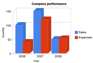

|
Google Charts Control is an implementation of a set of chart controls provided by Google Visualization API.
The control provides the following chart types:
The control has general properties and also an optional set of properties under Configuration Options section.
| General Properties |
| Width |
Width of the chart in pixels |
| Height |
Height of the chart in pixels. |
| Type |
Type of chart. |
| Mode |
Interactive / Image |
| Data |
Data to be shown |
| SelectedCategoryName |
Selected Category Name. |
| SelectedSeriesName |
Selected Series Name. |
| SelectedSeriesValue |
Selected Series Value. |
| XTitle |
Text to display below the horizontal axis. |
| YTitle |
Text to display by the vertical axis. |
| Title |
Text to display above the chart. |
| ControlName |
Name of the control. |
| Configuration Options |
| axisColor |
The color of the axis. |
| backgroundColor |
The background color for the main area of the chart. |
| colors |
The colors to use for the chart elements. Each element is a string that is a color supported by HTML, for example 'red' or '#00cc00'. The associated variable must be a Character Collection. |
| focusBorderColor |
The border around chart elements that are in focus (pointed by the mouse). |
| is3D |
If set to true, displays a three-dimensional change. |
| isStacked |
If set to true, line values are stacked (accumulated). |
| legend |
Position and type of legend. |
| legendBackgroundColor |
The background color for the legend area of the chart. |
| legendTextColor |
The color for the text entries of the legend. |
| reverseAxis |
If set to true, will draw categories from right to left. The default is to draw left-to-right. |
| titleColor |
The color for the chart's title. |
The property Data could be receive several values. Some examples are presented here:
When a numeric values is specified, the value is would be show as a row. For instance :
&num = 100
- An structure data type with character and number
The number value is graph as a row, and the character value would be the row title. For instance :
&sdt.Name1 = 'Sales'
&sdt.Value1 = 100
- A collection of structure data type with character and number
Every number value is graph as a row and each character value is assumed as a row title
&sdt.Name1 = '"2006"'
&sdt.Value1 = 100
&lstsdt.Add(&sdt1)
&sdt = new()
&sdt.Name1 = '"2007"'
&sdt1.Value1 = 150
&lstsdt1.Add(&sdt1)
&sdt1 = new()
&sdt1.Name1 = '"2008"'
&sdt1.Value1 = 50
&lstsdt1.Add(&sdt1)
- An structure data type with categories and series ( such as Gxchart implementation )
&GoogleChartData.Categories.Add("2006")
&GoogleChartData.Categories.Add("2007")
&GoogleChartData.Categories.Add("2008")
&GoogleChartSeries.Name = "Sales"
&GoogleChartSeries.Values.Add(100)
&GoogleChartSeries.Values.Add(150)
&GoogleChartSeries.Values.Add(50)
&GoogleChartData.Series.Add(&GoogleChartSeries)
&GoogleChartSeries = new()
&GoogleChartSeries.Name = "Expenses"
&GoogleChartSeries.Values.Add(40)
&GoogleChartSeries.Values.Add(120)
&GoogleChartSeries.Values.Add(53)
&GoogleChartData.Series.Add(&GoogleChartSeries)

| Select |
When the user clicks on a legend entry, the corresponding column in the data table is selected; when the user clicks on a chart column, the corresponding cell in the data table is selected. In addition, the following control's properties are populated with the relevant selected data: SelectedCategoryName, SelectedSeriesName and SelectedSeries Value. |
|